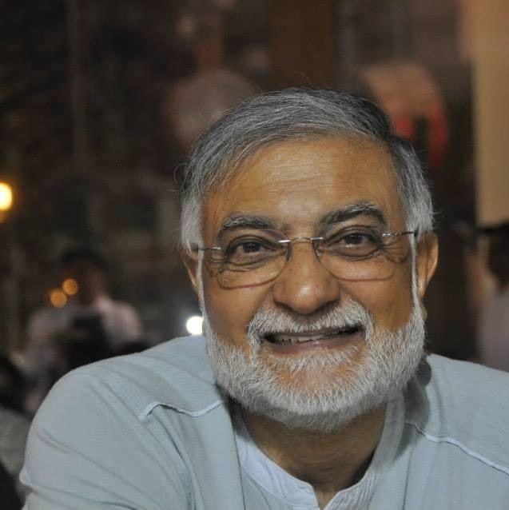
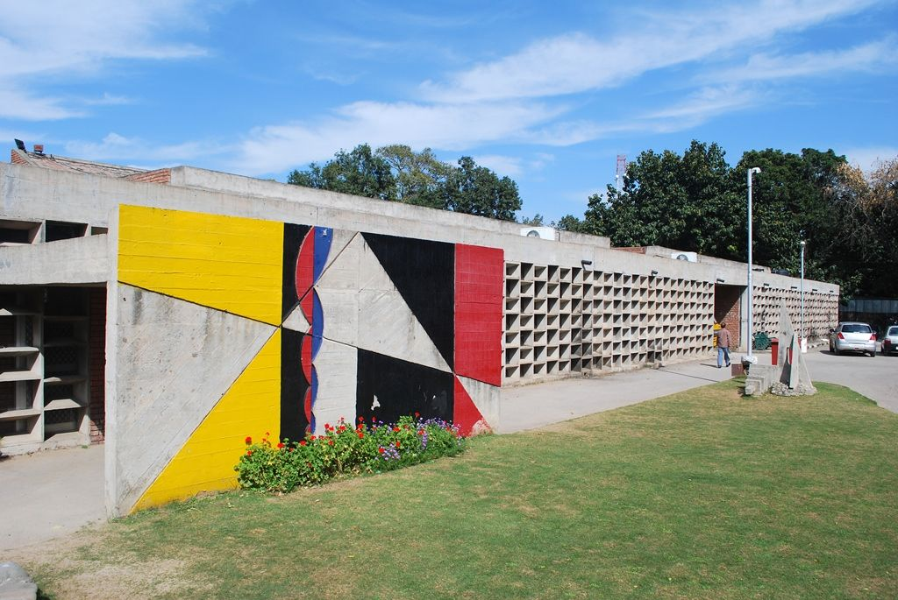

Ashok Kumar
Chadha
Trained in Le Corbusier’s Chandigarh and apprenticed in Delhi and Tehran, he then spent forty-four years in Kuwait managing the design of hospitals, universities, palaces, museums and an international airport terminal. Today he designs houses, their interiors and their lighting for a small number of clients, drawn by hand.

Fifteen projects across five decades
Large buildings are made by teams. Each project says plainly who designed it and what his part was. Select a project to see more.
From Chandigarh to Kuwait, and back to India

The full project record
Dates are the years of his involvement, which often precede completion. Values as stated on his CV.
How he designs
Principles drawn from fifty years of practice, for the houses he designs today.
Before air conditioning was cheap, buildings in Chandigarh, Tehran and Kuwait kept people comfortable with orientation, shade, mass and moving air. Most of what is sold today as sustainable design is that old knowledge, measured more carefully.
A house is the best place to apply it. It is small enough for one architect to control every decision, and it will be lived in for fifty years. The first decisions on site do the most work, and they cost nothing.
Shade is architecture
Le Corbusier’s brise-soleil and deep verandas taught a generation that a facade is a sun-control device first and a picture second.
The courtyard and the wind tower
At Mandala, Nader Ardalan was drawing on the Persian tradition he set out in The Sense of Unity (1973): the shaded court, the badgir, the garden as a cooling room.
Design for 50 °C
Four decades of summers above 45 °C make every square metre of west-facing glass an argument you will lose.
Size an overhang for a south window
A well-sized overhang blocks the high summer sun and lets the low winter sun in. Pick a city and adjust the depth.
Lighting has run through his whole career, from the interiors of a Chandigarh cinema in the early 1970s to Villa Moda, where he designed the lighting of every public area, the shop interiors and the building’s exterior.
His view is simple: light is a building material. It should be designed with the plan and the section, not chosen from a catalogue once the ceiling is finished. Daylight comes first, and electric light is arranged in layers so each room can change with the hour.
He has designed interiors at every scale: a cinema, an auditorium, open-plan headquarters with their signage and furniture, and the coordination of ten fashion houses’ boutiques inside one building.
In a house, the plan is where comfort is won or lost. Rooms should follow how the day is lived, move from public to private in a clear order, and borrow views and light from each other. Floors, joinery and storage are designed with the walls, not added afterwards.
Six ways to work with him
Each is a fixed scope with a clear deliverable.
Concept design for a new house
From a site visit and brief to a complete concept you can take to a builder or local architect.
- Site and climate analysis
- Plans, sections and elevations at 1:100
- Hand-drawn perspective
- Passive design strategy
Renovation feasibility study
Before you spend on an existing house: what can change, what it will involve, and what to keep.
- Condition survey and measured sketches
- Two or three options in sketch plan
- Approvals and sequencing notes
Design review
A second opinion on drawings you already have, from someone who has managed design on projects of every size.
- Drawings marked up in red pencil
- Written review of plan, climate and buildability
- One follow-up conversation
Passive cooling review
For a house that is too hot: orientation, shade, ventilation and mass, before you add more equipment.
- Sun-path and shading study
- Prioritized list of changes
- Sketch details for shading and screens
Lighting design for a home
A complete lighting scheme, layered room by room, for a new house or one you are renovating.
- Daylight review of windows and rooflights
- Lighting plans with ambient, task and accent layers
- Fitting and lamp schedule, with colour temperatures
- Facade and garden lighting
Interior design and layout
Plans that follow how you live, with floors, joinery and furniture designed together.
- Furnished layouts at 1:50
- Floor finishes and material palette
- Built-in storage and joinery drawings
Where sealed construction drawings or site supervision are required, he works alongside a locally registered architect of record.
Tell him about your site
Describe the site, who will live there and what you hope the house will feel like. He reads every enquiry himself, and the next step is usually a conversation and a site visit.